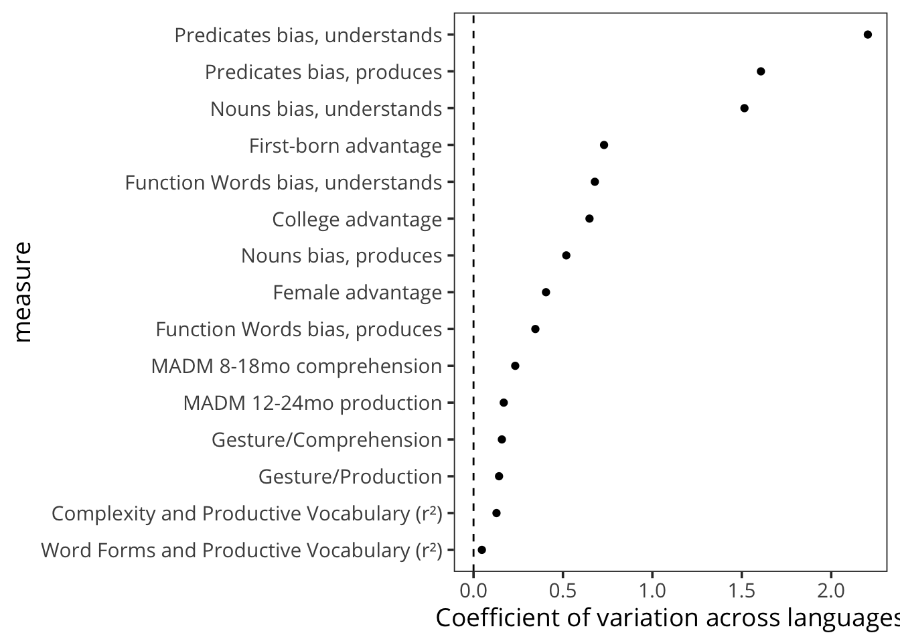
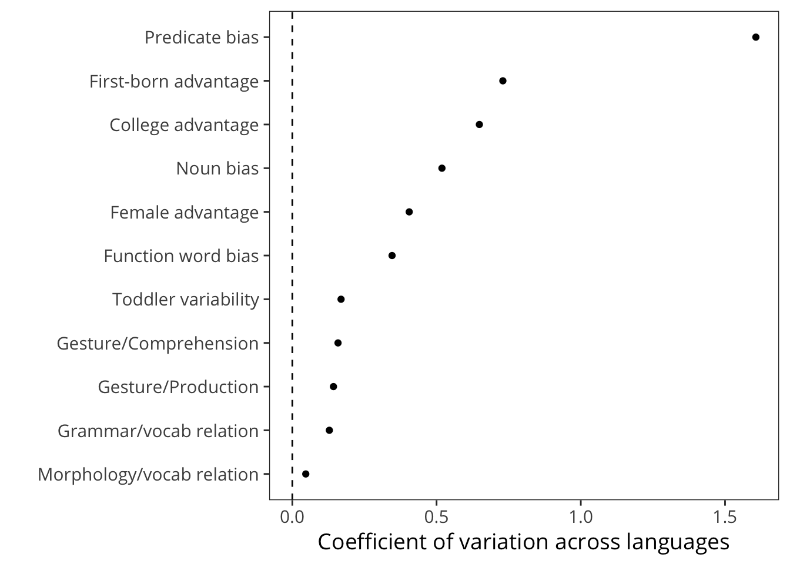
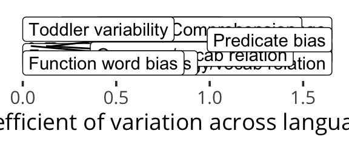
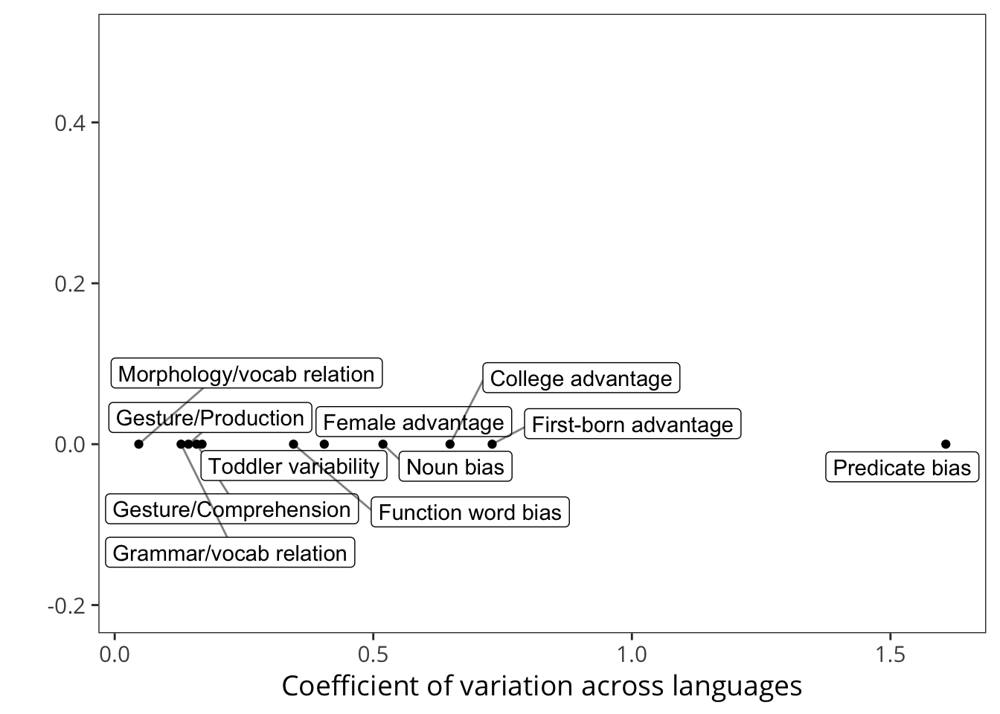

16 Variability and Consistency
In the preceding chapters, we have have presented evidence from a wide range of analyses of the Wordbank dataset. These analyses have revealed both striking variability across our units of sampling – children, primarily, but also words and even languages – but they have also revealed substantial consistency. In this conclusion we discuss the interplay and tension between these two ideas, variability and consistency, and how they interact with and inform theoretical conceptions of language acquisition more broadly.
16.1 Summary Observations
16.1.1 Variability
Beginning with the first monograph reporting the CDI norming study, L. Fenson et al. (1994) noted that variability is perhaps the primary and most striking fact about children’s vocabulary learning. In Chapter 5, we quantified this variability and found that – across languages and spanning children’s second year – the variability was as large as the central tendency.
In practical terms, the huge variance across children accounts for the fact that while some typically-developing two year olds will talk your ear off, others will barely utter a handful of words (even if they understand more). From a biological perspective, this variability is quite unprecedented. As a comparison, variation in heights for toddlers is tiny compared with variation in vocabulary: the mean height for a 24-month-old is around 33 inches, with a standard deviation of a little more than an inch, leading to a coefficient of variation around .03. This measurement is almost two orders of magnitude smaller than the coefficient of variation on vocabulary.
16.1.2 Consistency
How can we describe and explain this variability? While much of the variance in the distribution of children remains unexplained, we still observe some striking correlates that can provide In this sense, our work here follows what we might call the “Batesian program,” the use of large-N data from the CDI to identify consistent developmental patterns that give clues to the organization of the mechanisms of language acquisition. To provide grounding to our discussion, we review consistencies below:
Demographic differences. In Chapter 5, we explored demographic differences in vocabulary. With very limited exceptions, we see a consistent advantage for girls over boys in early word learning across languages. Similarly, across (a smaller set of) languages, children with earlier birth orders are reported to have larger vocabularies. Both of these demographic differences should be considered in light of the probability of reporting biases – for example, parents might expect girls to have larger vocabularies and hence report more words on average (though perhaps the consistency of the female advantage is surprising given variation in gender biases and stereotypes across countries, e.g., Nosek et al. 2009). We return to the issue of difficulties in causal inference below.
Coefficient of Variation Variability across kids (size of the fan) FIXME
Category biases. In Chapter ??, we extend previous work (e.g., Bornstein et al. 2004) by quantifying the degree of bias for and against different word classes in early vocabulary. For example, with a handful of exceptions (discussed in depth in that chapter) we see a bias for the overrepresentation of nouns in early vocabulary, at the expense of predicates and, even more so, function words.
Individual words. Following Tardif et al. (2008), we show that there are large similarities in the most common early words. Further, we show that the predictors of what words are easier and harder across langauges are extremely consistent.
Grammar and the lexicon. Following Bates and Goodman (1997), we show the tight developmental correlations between the growth of grammatical complexity in children’s early language and the growth of their vocabulary.
16.1.3 Limitations
So what do these data tell us?
16.1.4 Ruling out methodological alternatives
One important class of explanations that limits our ability to make generalizations is explanations of our observations that rely on data regarding the process of gathering CDI data itself, whether they relate to:
- the design process for the CDI, e.g., biases on the selection of words to be included in a form;
- the sampling process for families, e.g., biases on backgrounds of families within and across samples;
- the reporting process, e.g., biases regarding particular types of children (e.g., girls) or particular types of words (e.g., function words);
To rule out these explanations, we need to rely on the existence of converging evidence for the same effects from other sources. Some of these sources are cited in the original chapters, but we briefly review them here.
Gender [Probably in the original CDI/gender paper, look for references?]
Birth order [??]
Noun bias [bornstein study, others cited in that chapter?]
Grammar/Lexicon [??]
Predictor consistency (at least Huttenlocher et al. 1991, maybe others for frequency. harder for babiness, etc.)
In sum, for many of our proposed consistencies, we can begin to muster evidence against them from convergent sources. Nevertheless, much more work is needed to measure the size (not just the direction) of these effects and compare effect size across different measurements. For example, if the same size gender effect were found in the same population with both parent report and pointing-based methods, this finding would provide evidence against a parent-reporting bias account of gender differences. This high standard has yet to be met for most of the findings we report.
16.2 Consistency in Variability




Assuming that we can rule out reporting biases,
Claims of universals should always be taken with a grain of salt. In our case, a variety of caveats apply, from the relatively limited sample size N = 29 (see Piantadosi and Gibson 2014 for guidance on claims about strict universals) to the strong Indo-European bias amongst the languages in the database. At best our claim is of a statistical universal rather than an absolute universal. In addition, nearly all of our data come from populations in relatively industrialized nations (cf. Henrich, Heine, and Norenzayan 2010). FURTHER CAVEATS
16.3 Limitations
All of our analyses are fundamentally correlational. No causal inferences from Wordbank data are possible. We’ll say this again so you know we mean it: no causal inferences are possible. All of the consistencies described above admit alternative causal explanations.
For example, as noted, parents could think that girls speak more and hence report more words for girls. Or girls could actually know more words. Similarly, first-born children could receive more language input due to the lack of other competition for parents’ attention, and hence have larger vocabulary. Or parents could be aware of more of first-born children’s vocabulary. Or both. As in the gender case, external data can provide evidence for or against particular causal explanations but in their absence we are left to speculate.
For more cognitive consistencies that we observe, alternative causal interpretations are again possible. To take one example, the “noun bias” could result from any of the following causal mechansisms (as well as mixtures of these, or mixtures of these and others not described): * children could learn nouns more easily due to their social/referential disambiguation relative to the syntactic disambiguation (Gleitman 1990; Gillette et al. 1999); * they could be learned more easily due to their conceptual transparency (???); * they could be reported more frequently by parents due to some feature, such as their imageability or concreteness; * etc.
Nevertheless, an observed pattern of correlations can still create a target for theory.
Theorizing in language acquisition has traditionally argued on the axes defined by the nativist/empiricist debate, as well as the debate between domain-general and domain-specific representations and mechanisms. We label the implied axis of the debate here as the continuum between domain-general, empiricist theories and domain-specific, nativist theories. Anchoring one side of this continuum are statistical learning theories, that posit that domain-general mechanisms that learn structure from continuous input can induce structure from linguistic input [CITES: rethinking innateness, etc.]. On the other side are content-nativist theories that posit language-specific representational structures, such as the Principles and Parameters theory (N. Chomsky 1981, M. C. Baker (2005)).
For all the reasons described above, we do not believe that the observed consistencies directly bear on traditional questions of the mechanisms underlying language acquisition. Taking the correlation between grammar and the lexicon as a case study: theoretical proposals from many parts of the space shown in Figure ?? can account for these data. For example, a purely bottom-up statistical generalization mechanism would clearly produce a correlation between lexical and grammatical structure (as in Bates and Goodman 1997’s original propopsal); statistical generalizations require lexical data and so more data should correlate with more generalization. But a more domain-specific nativist grammatical proposal might also produce this correlation, provided that it required triggering data (e.g., ???, (???)). And many variations in between.
the consistencies we observe across languages point to putative universals: generalizations that hold across very disparate populations of human children learning typologically distinct languages. Surely such universals should be an important basis for theorizing about language acquisition. A theory that accounted for such universals “for free” – as a result of basic assumptions about the nature of the learning mechansisms – would be able to claim more and broader evidence, for example.
16.3.1 Speculations about Process
What sort of developmental process of vocabulary learning could lead to these universals? Any claim of this sort must be very speculative. If pushed, we would point to the following (weak) proposals regarding processes that are consistent with some of our putative universals.
Demographic differences are – at least – consistent with interactional-input theories of vocabulary development (Hart and Risley 1995,Hoff (2003),Weisleder and Fernald (2013)) in which the more and higher-quality the input the child receives, the faster vocabulary grows. Under this hypothesis, first-born, female, and higher-maternal education children all are likely to receive more and higher-quality input: female children through the route of their somewhat greater social/interactional abilities (an extra assumption), first-born children through their greater allocation of parent attention, and high maternal-education children through greater parental awareness of the role of input, differering parental practices, and greater amount of leisure time to spend with children among other factors.
Both the noun bias and the age-of-acquisition prediction results are consistent with the broader cross-situational viewpoint on acquisition (L. Smith and Yu 2008,Gleitman (1990)). On this view, nouns are easy to learn because the more they are heard, the more opportunities children get to build consistent mappings between the words and their referents. In contrast, verbs and other predicates rely more on a base of nouns and a basic comprehension of the syntactic structures in which they appear in order to infer meaning in context. Thus they should be acquired relatively later and with relativel more support from shorter, easier-to-parse utterances (MLU as a predictor, for example). Cross-linguistic exceptions will tend to be for languages like Mandarin where many early-learned verbs are semantically-transparent enough to be learned cross-situationally.
Correlations between grammar and the lexicon, as well as the greater role of MLU in predicting acquisition of function words are both consistent with views that posit gradual syntactic abstraction and generalization. Versions of such viewpoints exist throughout the broad theoretical space of language acquisition (Charles Yang 2016,M. Tomasello (2003),Meylan et al. (2017)), but all proposals rely on a learning mechanism in which generalizations about structure are graded and rely on the amount of evidence available.